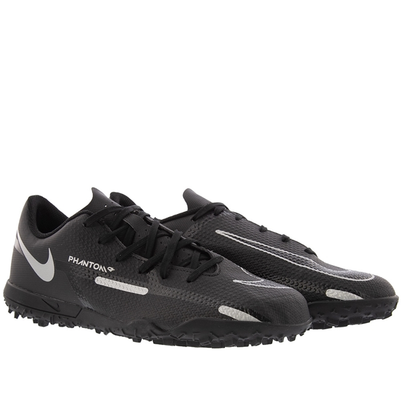

FIRE SWEAT

Bola de Futebol

Tamanho: Único Marca: Penalty Material: Poliuretano (PU) Cor: branca-preto Esporte: Futebol R$ 120,00
Chuteira
Genero: Unissex Setor: Adulto Material: Sintético Ocasião de Uso: Futebol Modelo: Chuteira Acabamento: Napa Tamanhos: 36-37-38 R$ 550,00
Chuteira Fem

Marca: Adidas Material: Sintético Ocasião de Uso: Futebol Modelo: Chuteira Acabamento: Napa Tamanhos: 35-36-37 R$ 650,00
História do Futebol
O futebol é o esporte mais popular do mundo e suas origens remontam há 5 mil anos na China. O futebol moderno surgiu na Inglaterra durante o século XIX. O futebol é o esporte coletivo mais popular do planeta. Segundo dados da Federação Internacional de Futebol (Fifa), cerca de 270 milhões de pessoas atuam em atividades diretamente relacionadas ao esporte (seja como jogador, seja como árbitro)
Lionel Messi - Jogador de Futebol
Lionel Andrés Messi Cuccittini é um futebolista argentino, considerado um dos melhores jogadores de futebol do mundo, e atua como atacante. Atualmente joga pelo Inter Miami e pela Seleção Argentina, onde, atuando como capitão, venceu a Copa do Mundo do Catar de 2022.
Endereço da loja google maps.